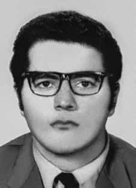

Iuri
Xavier
Pereira
CIRCUNSTÂNCIAS DA MORTE
A versão dos órgãos de segurança sobre a morte de Iuri Xavier Pereira e outros dois militantes da ALN, Ana Maria e Marcos Nonato da Fonseca, foi divulgada nos jornais O Globo, Jornal do Brasil e Estado de S. Paulo nas edições de 15 de junho de 1972.
De acordo com a nota, “por volta das 14h, os agentes de segurança aproximaram-se dos terroristas, dando-lhes voz de prisão, tendo os citados terroristas reagido a bala de armas automáticas e metralhadoras”. Como consequência desse enfrentamento, teriam morrido “no local, os terroristas Iuri Xavier Pereira, Ana Maria Nacinovic Corrêa e Marcos Nonato da Fonseca”.
Ainda segundo essa versão, o cerco policial teria sido montado depois de uma denúncia com o objetivo de capturar indivíduos procurados pelas forças de repressão. O confronto armado teria ocorrido no restaurante Varella, no bairro da Mooca, em São Paulo (SP), onde os agentes de segurança localizaram quatro militantes da ALN – três dos quais morreram, enquanto o quarto, Antônio Carlos Bicalho Lana, conseguiu escapar.
Segundo documento do CIE, a Informação nº 0571/S- 102-A11-CIE, datada de 12 de junho de 1972, “Após assalto à firma D. F. Vasconcelos, os órgãos de segurança desenvolveram intensas buscas na área da Grande São Paulo, e, em consequência, na manhã do dia 14 Jun 72, foram localizados 4 dos 5 terroristas que participaram do assalto a D. F. Vasconcelos, sendo reconhecidos os 4 antes nominados. Foi feito um cerco ao local, devido à alta periculosidade dos terroristas, os agentes de segurança passaram a vigiar e controlar os seus passos, aguardando um momento propício para efetuar as prisões. […] por volta das 14 horas, os agentes da segurança aproximaram-se dos terroristas, dando-lhes voz de prisão, tendo os citados terroristas prontamente reagido à bala de armas automáticas e metralhadora. No intenso tiroteio que estabeleceu, os terroristas conseguiram ferir: – dois agentes da Segurança; – a menina Irene Dias, de 3 anos de idade…; Rodolfo Aschrman… que passava pelo local”.
Uma apostila da Escola Nacional de Informações (EsNI), de 1974, intitulada Contra subversão, inclui, na página 233 um croqui com detalhes da operação: “em duplas, os agentes posicionaram-se dentro do restaurante, na carpintaria, no terreno ao lado do local e no telhado de um posto de gasolina, apoiados por um carro estacionado em uma das esquinas”. Evidências, no entanto, contestam a versão da morte em tiroteio e indicam que os militantes foram vítimas de execução e, provavelmente, de tortura, nas dependências do DOI-CODI do II Exército (SP).
Apesar de tratar-se de confronto armado em local público, não foi realizada perícia de local que permitisse comprovar o suposto tiroteio, e os corpos dos militantes mortos não foram levados para o necrotério. Também não foram localizados documentos que indiquem a relação das armas utilizadas ou mostrem fotos do local, como também não foram encontrados exames de corpo de delito dos policiais ou dos transeuntes feridos, mencionados na nota divulgada.
Em depoimento prestado à Comissão da Verdade do estado de São Paulo Rubens Paiva, em 24 de fevereiro de 2014, Francisco de Andrade, preso entre novembro de 1971 a novembro de 1972 na OBAN, declarou: “Bom, numa dessas voltas, porque, possivelmente, deve ser do meio da tarde pra frente, porque esses depoimentos eram sempre à tarde, né? Nunca aconteciam de manhã esses depoimentos oficiais no DOPS. Na volta de um desses depoimentos, quando o carro da OBAN parou no pátio de estacionamento […] Parava num pátio, você vinha andando e entrava […] Que é aqui nessa antiga delegacia aqui da Rua Tutoia. Tinha um pátio lá fora e você andava uma coisa meio aberta e entrava num portão de ferro que dava acesso à delegacia. Antes desse portão de ferro, na hora que a gente estava voltando, eu vi três corpos no chão, que era o Iuri, a Ana Maria e o Marcos. Mortos. Vestidos. Você sempre tem insistido nessa coisa que eles quando legalizam estão todos… Estavam lá. Também uma coisa como se tivesse acontecido naquele momento. Mas nesse dia, ali no pátio da OBAN estavam os três ali e eles estavam mortos. Isso eu tenho certeza, eu vi bem, eu conhecia muito bem”.
Seu testemunho é corroborado pelas fichas de identificação de Ana Maria e Iuri Xavier, feitas no DOI-CODI do II Exército, que registram como data de entrada nesse órgão o dia 14 de junho de 1972. Nas investigações realizadas pela CEMDP, o perito Celso Nenevê, após análise dos casos e dos materiais periciais disponíveis, recomendou a exumação e exame dos restos mortais dos militantes mortos.
Os familiares decidiram promover por conta própria a exumação dos restos mortais de Ana Maria, Iuri Xavier e Marcos Nonato, que, foram examinados pelo antropólogo forense Luís Fondebrider, da Equipe Argentina de Antropologia Forense, e pelo perito brasileiro Nelson Massini. A análise comparativa entre o laudo de necropsia, concluído no Instituto Médio Legal de São Paulo em 20 de junho de 1972, e o laudo produzido pelos peritos mencionados em janeiro de 1997 evidencia grandes contradições. No caso de Iuri Xavier, constatou-se que foi atingido por pelo menos seis projéteis de arma de fogo, o que difere do laudo original, que indicou apenas três.
Por outro lado, a análise das fotografias disponíveis permitiu comprovar que o corpo de Iuri apresentava lesões múltiplas, evidência de que foi agredido quando ainda estava vivo. O laudo elaborado pelo Dr. Massini indica ainda a existência de duas perfurações de entrada de arma de fogo no o coração, as quais são características de disparos efetuados contra alvo imóvel e típicas de tiros de misericórdia ou de execução. Essas perfurações não foram descritas no documento de 1972.
O Laudo de Exame Necroscópico, de 20 de junho de 1972, assinado pelos legistas Isaac Abramovitch e Abeylard de Queiroz Orsini, corrobora a falsa versão e indica que Iuri vestia “cueca azul e meias cinza”, vestimenta pouco usual para alguém que estaria almoçando num restaurante. A ausência de informações no Laudo de Exame Necroscópico sobre os ferimentos observados no corpo e de descrição da trajetória dos projéteis de arma de fogo impediu que importantes circunstâncias da morte de Iuri fossem esclarecidas à época dos exames.
Em 24 de fevereiro de 2014, o núcleo pericial da CNV produziu laudo sobre a morte de Iuri Xavier Pereira, com base nas peças técnicas produzidas em 1972, 1996 e 1997. Os peritos concluíram que, dos projéteis que atingiram Iuri, um no tórax e dois no crânio, pelo menos um foi disparado de cima para baixo, quando ele se encontrava no chão. Por outro lado, os ferimentos na crista ilíaca e no perônio, ambos do lado esquerdo do corpo de Iuri, podem caracterizar técnica de captura. As marcas em seu braço e antebraço esquerdos indicam que Iuri pode ter esboçado gesto de defesa.
A equipe de peritos da CNV também consultou a publicação Ação subversiva no Brasil, produzida pelo Cenimar em maio de 1972, cujas folhas de números 231 a 233 trazem descrição e ilustração sobre a ação dos agentes de segurança na operação que resultou na morte de Iuri Xavier Pereira. A ilustração mostra Iuri sendo atingido por projéteis de arma de fogo na parte posterior do seu corpo e reagindo com disparos; no entanto, a única ferida de entrada de projétil de arma de fogo observada na parte posterior do corpo de Iuri localiza-se na região occipital e, como visto anteriormente, é paralisante e impediria qualquer reação ou movimentação do militante.
Ademais, a comparação entre o Laudo de Exame Necroscópico e a análise realizada a partir da exumação demonstra que apenas em torno de 56% das feridas existentes no corpo de Iuri foram relatadas no Laudo. Além disso, dentre os achados descritos no Laudo, não consta o ferimento produzido por entrada de projetil de arma de fogo na região occipital esquerda, que poderia demonstrar a intenção de causar a morte, em evento compatível com execução.
Iuri Xavier Pereira foi enterrado como indigente no Cemitério Dom Bosco, em Perus, na cidade de São Paulo (SP), e somente em 1982 seus restos mortais foram localizados e trasladados para o Rio de Janeiro. Em 21 de março de 2014, o Instituto Nacional de Criminalística (INC) produziu um laudo que atestou que os restos mortais encontrados são compatíveis com os de um filho biológico de Zilda Paula Xavier Pereira, o que, considerando-se as circunstâncias, permitiu concluir tratarem-se dos restos mortais de Iuri Xavier Pereira.
The security bodies' version of the death of Iuri Xavier Pereira and two other ALN militants, Ana Maria and Marcos Nonato da Fonseca, was published in the newspapers O Globo, Jornal do Brasil and Estado de S. Paulo in the June 15, 1972 editions.
According to the note, “at around 2pm, security agents approached the terrorists, arresting them, and the aforementioned terrorists reacted to bullets from automatic weapons and machine guns”. As a result of this confrontation, “terrorists Iuri Xavier Pereira, Ana Maria Nacinovic Corrêa and Marcos Nonato da Fonseca died on site”.
According to this version, the police siege was set up following a tip with the aim of capturing individuals wanted by the repression forces. The armed confrontation reportedly took place at the Varella restaurant, in the Mooca neighborhood, in São Paulo (SP), where security agents located four ALN militants – three of whom died, while the fourth, Antônio Carlos Bicalho Lana, managed to escape.
According to CIE document, Information No. 0571/S- 102-A11-CIE, dated June 12, 1972, “After the assault on the firm D. F. Vasconcelos, security agencies carried out intense searches in the Greater São Paulo area, and, consequently, on the morning of June 14, 72, 4 of the 5 terrorists who participated in the assault on D. F. Vasconcelos were located, with the 4 previously named. A siege was made at the location, due to the high danger of the terrorists, the security agents began to monitor and control their actions, waiting for a suitable moment to make the arrests. […] at around 2 pm, the security agents approached the terrorists, arresting them, and the aforementioned terrorists promptly reacted to the bullets from automatic weapons and machine guns. Irene Dias, 3 years old…; Rodolfo Aschrman… who was passing by the place”.
A handout from the National Information School (EsNI), from 1974, entitled Against subversion, includes, on page 233, a sketch with details of the operation: “in pairs, the agents positioned themselves inside the restaurant, in the carpentry shop, on the land next to the site and on the roof of a gas station, supported by a car parked on one of the corners”. Evidence, however, disputes the version of death in shooting and indicates that the militants were victims of execution and, probably, torture, on the premises of the DOI-CODI of the II Army (SP).
Despite the fact that it was an armed confrontation in a public place, no site investigation was carried out to prove the alleged shooting, and the bodies of the dead militants were not taken to the morgue. There were also no documents found indicating the list of weapons used or showing photos of the scene, nor were any forensic examinations of the police officers or injured bystanders, mentioned in the released note, found.
In a statement given to the Truth Commission of the state of São Paulo Rubens Paiva, on February 24, 2014, Francisco de Andrade, imprisoned between November 1971 and November 1972 at OBAN, stated: "Well, on one of those trips, because, possibly, it must have been mid-afternoon, because these statements were always in the afternoon, right? These official statements never took place in the morning at the DOPS. On the way back from one of these statements, when the police car OBAN stopped in the parking lot [...] It stopped in a courtyard, you walked and entered [...] Which is here in this old police station here on Tutoia Street. There was a courtyard outside and you walked through something that was half open and entered an iron gate that gave access to the police station. Before this iron gate, when we were returning, I saw three bodies on the ground, which were Iuri, Ana Maria and Marcos. They were there. Something as if it had happened at that moment. But that day, there in the OBAN courtyard, the three were there and they were dead. I know that for sure, I saw it well, I knew it very well.”
Their testimony is corroborated by the identification files of Ana Maria and Iuri Xavier, made at the DOI-CODI of the II Army, which record June 14, 1972 as the date of entry into that body. In the investigations carried out by CEMDP, expert Celso Nenevê, after analyzing the cases and available expert materials, recommended the exhumation and examination of the mortal remains of the dead militants.
The family members decided to carry out the exhumation of the remains of Ana Maria, Iuri Xavier and Marcos Nonato on their own, which were examined by forensic anthropologist Luís Fondebrider, from the Argentine Forensic Anthropology Team, and by Brazilian expert Nelson Massini. The comparative analysis between the autopsy report, completed at the Instituto Médio Legal de São Paulo on June 20, 1972, and the report produced by the aforementioned experts in January 1997 highlights major contradictions. In the case of Iuri Xavier, it was found that he was hit by at least six firearm projectiles, which differs from the original report, which indicated only three.
On the other hand, the analysis of the available photographs made it possible to prove that Iuri's body had multiple injuries, evidence that he was attacked when he was still alive. The report prepared by Dr. Massini also indicates the existence of two gunshot wounds in the heart, which are characteristic of shots fired at an immobile target and typical of mercy or execution shots. These perforations were not described in the 1972 document.
The Necroscopic Examination Report, dated June 20, 1972, signed by coroners Isaac Abramovitch and Abeylard de Queiroz Orsini, corroborates the false version and indicates that Iuri was wearing “blue underwear and gray socks”, an unusual outfit for someone who would be having lunch in a restaurant. The lack of information in the Necroscopic Examination Report about the injuries observed on the body and a description of the trajectory of the firearm projectiles prevented important circumstances of Iuri's death from being clarified at the time of the examinations.
On February 24, 2014, the CNV expert group produced a report on the death of Iuri Xavier Pereira, based on technical documents produced in 1972, 1996 and 1997. The experts concluded that, of the projectiles that hit Iuri, one in the chest and two in the skull, at least one was fired from above, when he was on the ground. On the other hand, the injuries to the iliac crest and fibula, both on the left side of Iuri's body, could characterize a capture technique. The marks on his left arm and forearm indicate that Iuri may have made a defensive gesture.
The CNV team of experts also consulted the publication Ação subversiva no Brasil, produced by Cenimar in May 1972, whose pages numbers 231 to 233 provide a description and illustration of the action of security agents in the operation that resulted in the death of Iuri Xavier Pereira. The illustration shows Iuri being hit by firearm projectiles in the back of his body and reacting with shots; However, the only gunshot entry wound observed on the back of Iuri's body is located in the occipital region and, as seen previously, is paralyzing and would prevent any reaction or movement by the militant.
Furthermore, the comparison between the Necroscopic Examination Report and the analysis carried out from the exhumation shows that only around 56% of the wounds on Iuri's body were reported in the Report. Furthermore, among the findings described in the Report, there is no injury caused by a firearm projectile entering the left occipital region, which could demonstrate the intention to cause death, in an event compatible with execution.
Iuri Xavier Pereira was buried as a pauper in the Dom Bosco Cemetery, in Perus, in the city of São Paulo (SP), and only in 1982 his remains were located and transferred to Rio de Janeiro. On March 21, 2014, the National Institute of Criminalistics (INC) produced a report that attested that the remains found were compatible with those of a biological son of Zilda Paula Xavier Pereira, which, considering the circumstances, allowed us to conclude that they were the remains of Iuri Xavier Pereira.
La versión de los cuerpos de seguridad sobre la muerte de Iuri Xavier Pereira y otros dos militantes de la ALN, Ana María y Marcos Nonato da Fonseca, fue publicada en los diarios O Globo, Jornal do Brasil y Estado de S. Paulo en las ediciones del 15 de junio de 1972.
Según la nota, “sobre las 14.00 horas, agentes de seguridad se acercaron a los terroristas, deteniéndolos, y los citados terroristas reaccionaron a balazos de armas automáticas y ametralladoras”. Como resultado de este enfrentamiento, “murieron en el lugar los terroristas Iuri Xavier Pereira, Ana Maria Nacinovic Corrêa y Marcos Nonato da Fonseca”.
Según esta versión, el cerco policial se habría iniciado a raíz de una pista con el objetivo de capturar a personas buscadas por las fuerzas de represión. El enfrentamiento armado habría ocurrido en el restaurante Varella, en el barrio de Mooca, en São Paulo (SP), donde agentes de seguridad localizaron a cuatro militantes del ALN, tres de los cuales murieron, mientras que el cuarto, Antônio Carlos Bicalho Lana, logró escapar.
Según documento del CIE, Información N° 0571/S-102-A11-CIE, de 12 de junio de 1972, “Después del asalto a la empresa D. F. Vasconcelos, los organismos de seguridad realizaron intensas búsquedas en el área del Gran São Paulo, y, en consecuencia, en la mañana del 14 de junio de 72, fueron localizados 4 de los 5 terroristas que participaron en el asalto al D. F. Vasconcelos, siendo los 4 anteriormente mencionado se realizó un cerco al lugar, debido a la alta peligrosidad de los terroristas, los agentes de seguridad comenzaron a vigilar y controlar sus acciones, esperando el momento oportuno para realizar las detenciones […] alrededor de las 2 de la tarde, los agentes de seguridad se acercaron a los terroristas, deteniéndolos, y los mencionados terroristas reaccionaron prontamente ante los disparos de armas automáticas y ametralladoras Irene Dias, de 3 años…;
Un folleto de la Escuela Nacional de Información (EsNI), de 1974, titulado Contra la subversión, incluye, en la página 233, un croquis con detalles del operativo: “por parejas, los agentes se posicionaron en el interior del restaurante, en la carpintería, en el terreno contiguo al sitio y en el techo de una gasolinera, apoyados en un automóvil estacionado en una de las esquinas”. Los testimonios, sin embargo, contradicen la versión de la muerte por disparos e indican que los militantes fueron víctimas de ejecución y, probablemente, tortura, en las instalaciones del DOI-CODI del II Ejército (SP).
A pesar de que se trató de un enfrentamiento armado en un lugar público, no se realizó ninguna investigación del lugar para comprobar el presunto tiroteo y los cuerpos de los militantes muertos no fueron trasladados a la morgue. Tampoco se encontraron documentos que indiquen la lista de armas utilizadas ni fotografías del lugar, ni se encontraron exámenes forenses a los policías o transeúntes heridos, mencionados en la nota difundida.
En declaración dada ante la Comisión de la Verdad del estado de São Paulo Rubens Paiva, el 24 de febrero de 2014, Francisco de Andrade, encarcelado entre noviembre de 1971 y noviembre de 1972 en la OBAN, afirmó: "Bueno, en uno de esos viajes, porque posiblemente debió ser a media tarde, porque esas declaraciones eran siempre por la tarde, ¿no? Estas declaraciones oficiales nunca tuvieron lugar por la mañana en el DOPS. Al regresar de una de estas declaraciones, cuando el patrullero OBAN se detuvo en el estacionamiento [...] Se detuvo en un patio, caminaste y entraste [...] Que es aquí en esta antigua comisaría aquí en la calle Tutoia y caminaste por algo que estaba entreabierto y entraste por un portón de hierro que daba acceso a la comisaría, cuando estábamos regresando, vi tres cuerpos en el suelo, que eran Iuri, Ana María y Marcos. Algo como si hubiera sucedido en ese momento. Patio de OBAN, los tres estaban allí y estaban muertos, eso lo sé con seguridad, lo vi bien, lo sabía muy bien”.
Su testimonio está corroborado por los expedientes de identificación de Ana María e Iuri Xavier, realizados en el DOI-CODI del II Ejército, que registran el 14 de junio de 1972 como fecha de ingreso en ese organismo. En las investigaciones realizadas por el CEMDP, el perito Celso Nenevê, después de analizar los casos y el material pericial disponible, recomendó la exhumación y examen de los restos mortales de los militantes muertos.
Los familiares decidieron realizar por su cuenta la exhumación de los restos de Ana María, Iuri Xavier y Marcos Nonato, que fueron examinados por el antropólogo forense Luís Fondebrider, del Equipo Argentino de Antropología Forense, y por el perito brasileño Nelson Massini. El análisis comparativo entre el informe de la autopsia, realizado en el Instituto Medio Legal de São Paulo el 20 de junio de 1972, y el informe elaborado por los peritos antes mencionados en enero de 1997 pone de relieve importantes contradicciones. En el caso de Iuri Xavier, se constató que fue impactado por al menos seis proyectiles de arma de fuego, lo que difiere del informe original que señalaba solo tres.
Por otro lado, el análisis de las fotografías disponibles permitió comprobar que el cuerpo de Iuri presentaba politraumatismos, evidencia de que fue atacado cuando aún estaba con vida. El informe elaborado por el doctor Massini también indica la existencia de dos impactos de bala en el corazón, característicos de disparos realizados contra un objetivo inmóvil y propios de disparos de piedad o de ejecución. Estas perforaciones no fueron descritas en el documento de 1972.
El Informe de Examen Necroscópico, fechado el 20 de junio de 1972, firmado por los forenses Isaac Abramovitch y Abeylard de Queiroz Orsini, corrobora la versión falsa e indica que Iuri vestía “ropa interior azul y calcetines grises”, vestimenta inusual para alguien que estaría almorzando en un restaurante. La falta de información en el Informe de Examen Necroscópico sobre las lesiones observadas en el cuerpo y una descripción de la trayectoria de los proyectiles de arma de fuego impidió que circunstancias importantes de la muerte de Iuri fueran esclarecidas al momento de los exámenes.
El 24 de febrero de 2014, el grupo de peritos de la CNV elaboró un informe sobre la muerte de Iuri Xavier Pereira, con base en documentos técnicos elaborados en 1972, 1996 y 1997. Los peritos concluyeron que, de los proyectiles que impactaron a Iuri, uno en el pecho y dos en el cráneo, al menos uno fue disparado desde arriba, cuando se encontraba en el suelo. Por otro lado, las lesiones en la cresta ilíaca y el peroné, ambas en el lado izquierdo del cuerpo de Iuri, podrían caracterizar una técnica de captura. Las marcas en su brazo y antebrazo izquierdo indican que Iuri pudo haber hecho un gesto defensivo.
El equipo de expertos de la CNV también consultó la publicación Ação subversiva no Brasil, producida por Cenimar en mayo de 1972, cuyas páginas números 231 a 233 describen e ilustran la actuación de los agentes de seguridad en la operación que resultó en la muerte de Iuri Xavier Pereira. La ilustración muestra a Iuri siendo alcanzado por proyectiles de arma de fuego en la parte posterior de su cuerpo y reaccionando con disparos; Sin embargo, la única herida de bala observada en la parte posterior del cuerpo de Iuri se localiza en la región occipital y, como se vio anteriormente, es paralizante e impediría cualquier reacción o movimiento del militante.
Además, la comparación entre el Informe del Examen Necroscópico y el análisis realizado a partir de la exhumación muestra que sólo alrededor del 56% de las heridas en el cuerpo de Iuri fueron reportadas en el Informe. Además, entre los hallazgos descritos en el Informe, no existe ninguna lesión causada por un proyectil de arma de fuego que haya ingresado en la región occipital izquierda, lo que podría demostrar la intención de causar la muerte, en un evento compatible con la ejecución.
Iuri Xavier Pereira fue enterrado como indigente en el Cementerio Dom Bosco, en Perus, en la ciudad de São Paulo (SP), y recién en 1982 sus restos fueron localizados y trasladados a Río de Janeiro. El 21 de marzo de 2014, el Instituto Nacional de Criminalística (INC) elaboró un informe que atestiguó que los restos encontrados eran compatibles con los de un hijo biológico de Zilda Paula Xavier Pereira, lo que, considerando las circunstancias, permitió concluir que se trataba de los restos de Iuri Xavier Pereira.